HELP-CPR
HELP-CPR is a responsive website where anyone can learn First Aid procedures or be guided in a real emergency situation.
Persona, Problem statement, and user story.

 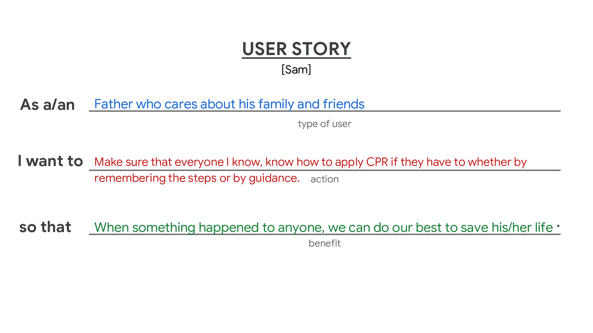
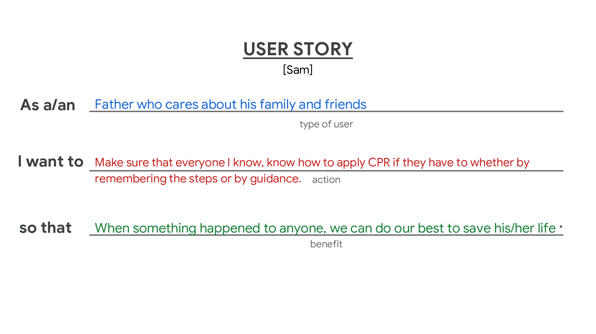
Site map
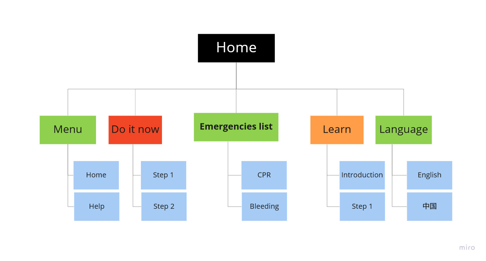Wireframes ( paper & digital )
 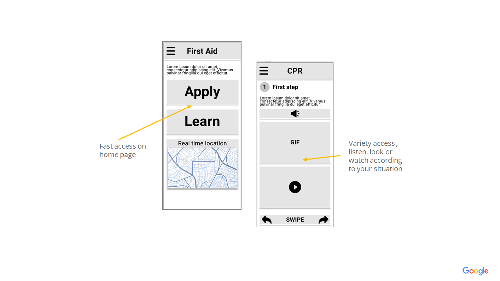
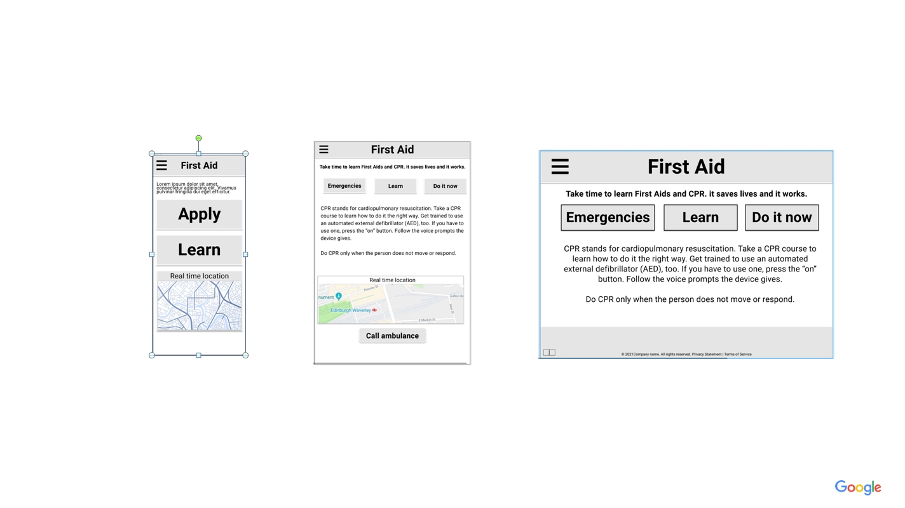
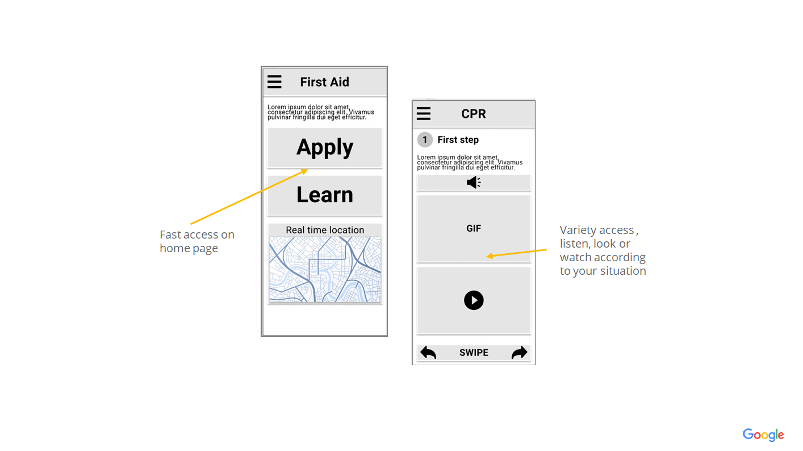
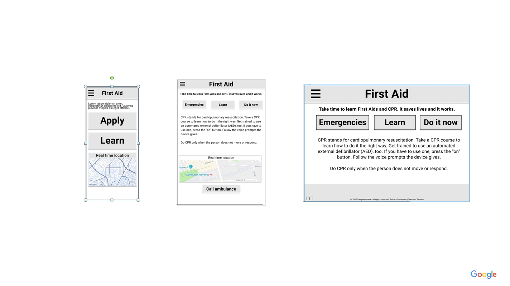
Prototypes ( Low-Fidelity )

Click here to view prototype on Figma
Identify patterns and themes
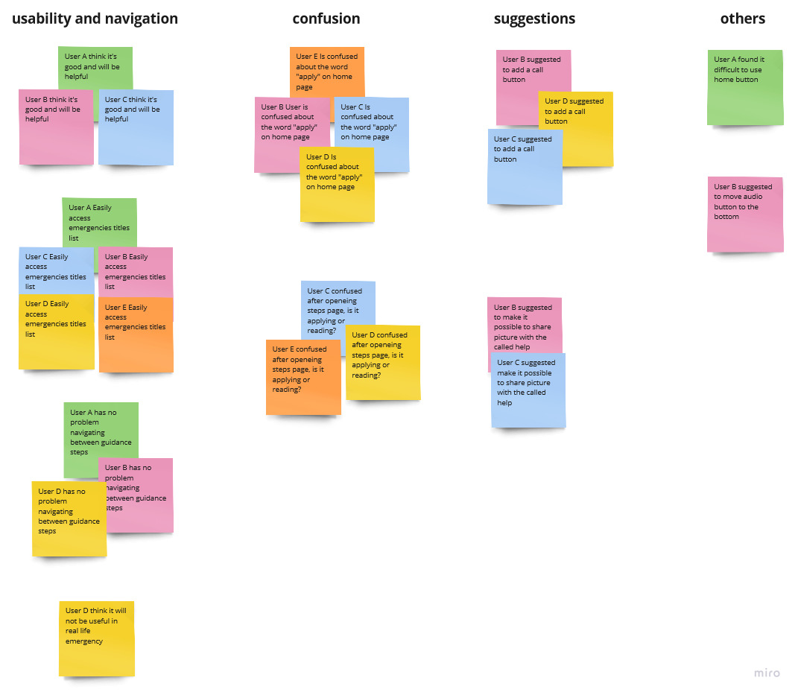Iteration and Mockups
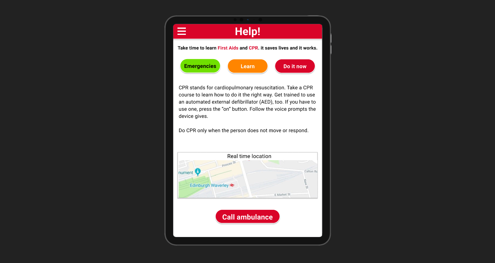
Prototypes ( High-Fidelity )
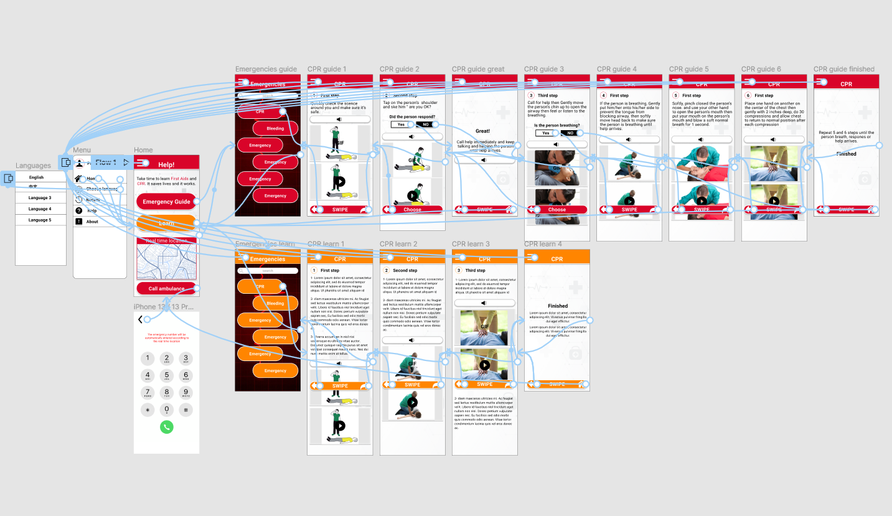Click here to view prototype on Figma
Thanks 🙂
Thank you for your time reviewing my work.
For more details, check project
story or contact me
Team and roles
This was a project for social good during my Google UX Design Professional Certificate. This means my role was a Generalist UX Designer because I do the whole process, research, empathy, sketches, wireframe, mockups, prototypes, tests, and whatever the process requires.
Why?
● There are many resources for First Aid and CPR, but most
of them don't have fast access.
● Many people don't know how to do CPR or First Aid, or they forgot how to do it.
● Many people died when there was a chance to save them, and that's because those around them
didn't know how to do CPR or First Aid.
Who?
It's for social good and it's about First Aid, so it's for everyone above the age of 12.
Key challenges
The gap between design and development:
When I was working on this project, my web development knowledge was 0%. When I started learning web
development, I realized how important it is for me as a UX designer.
Time constraint:
There was still a lot to learn and the course fee was a monthly subscription, so I was working as
fast as possible 😅.
Toolkit
Foundational research
I conducted user interviews, which I then turned into empathy maps to better understand the target user and their needs.
Initial concepts
Mapping user's journey revealed how helpful it would be for the user to easily access First Aid and CPR guidance in emergency situation.

Storybording

User flow
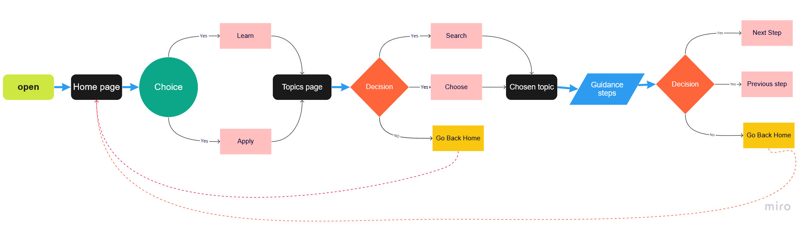Competitive audit
I checked some First Aid & CPR providers and couldn't find one with fast access that could actually help the user in an emergency situation, except for one, but it's not complete. you can check it here

Site map
The goal was to make a simple information architecture decisions that would improve the speed of access to the guidance. So I tried to make the structure as simple as possible.
Wireframes
Taking the time to draft iterations of each screen of the design on paper ensured that the elements that made it to digital wireframes would be well-suited to address user pain points.

Digital wireframes
Screen variety
Low fidelity prototype
I connected all of the screens involved in the primary user flow of accessing, navigating and viewing guidance.
Click here to view prototype on Figma
Usability study
I conducted usability study to set direction and priorities. it
uncoverd two findings:
1- Most of users were confused about the word “apply” on home page.
2- Some users suggested a call button and an option to share updates about the situation as
pictures.
Note-taking and affinity diagram
During the research, I wrote down all the important notes from users, so later I can use them for Identifying patterns and theme.


Identifying patterns to come up with insights


Insights
Prioritizing insights from most urgent to least urgent
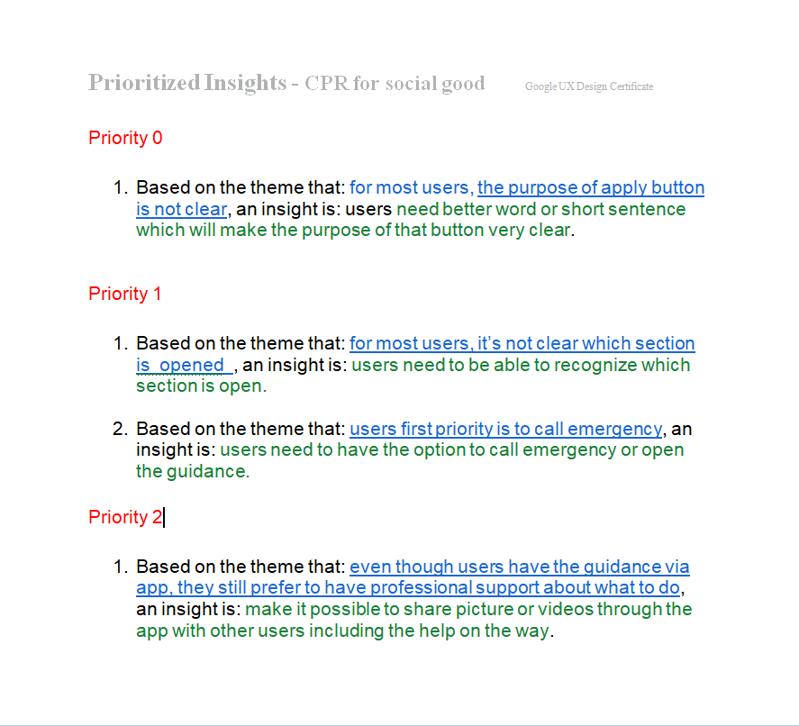Refining the design
I added a call button to help the user call for help based on his location on the map.

I added a Yes/No question to make it smoother for the user to go through the process.

Mockups
High fidelity prototype
Hi-Fi prototype followed the same user flow as the Lo-Fi prototype. It include the design changes made after the usability study.
Click here to view prototype on Figma
Accessibility considerations
1- I used headings with different sized text for clear visual
hierarchy.
2- I used different colors to help users differentiate between sections.
3- I used three different ways to tell the same info, read it, listen to it, or watch it.
Takeaways
Next steps
Thanks 🙂
Thank you for your time reviewing my work.
If there is anything you would like to talk about, do not hesitate to contact me